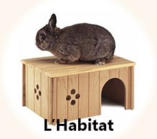
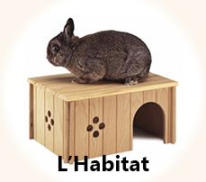

L'Alimentation
Introduction
- malocclusion des molaires (le lapin mastique toute la journée usant ainsi correctement ses dents et fortifiant sa mâchoire)
- problèmes urinaires (ce régime est pauvre en calcium car pauvre en granulés)
- obésité (ce régime est pauvre en graisse)
- problèmes cardiaques (pas de graisses animales, taux de graisse inférieur à 2%)
- problèmes digestifs (le lapin fait travailler son transit en continu et les fibres qu'il contient sont indispensables au bon fonctionnement de tout le système digestif.)
- selles molles chroniques et caecotrophes non absorbés (souvent causés par une alimentation trop riche en protéines et trop pauvre en fibres .A ne pas confondre avec les crottes molles émisent quand le lapin est excité. Attention chez le lapereau une non absorption de caecotrophes est normale ils n'ont pas toujours le réflexe d'aller les manger, ne le mettez surtout pas au régime)
- boules de poils (grâce à un apport journalier important en fibre le transit fonctionne bien et rend l'absorption des poils plus facile) p class="retour"> Tous ces problèmes peuvent avoir une autre cause et être génétiques mais il est maintenant établi qu'une nourriture mal adaptée peut causer des ravages parfois visibles seulement quand le lapin atteint 3-4 ou 5 ans. A ce stade là, la vie du lapin peut être mise en danger.
Les bases du régime
Tous les jours : Foin à volonté + herbes et feuilles + légumes variés + granulés en quantité limitée + eau
De temps en temps : carotte et fruits.
Exceptionnellement : raisins secs, flocons d'avoine non sucrés.
Jamais : Chocolat, Céréales, graines, grains, fruits oléagineux( noisettes, noix), maïs, friandises industrielles, pain, sucreries, matière grasse, biscuits, biscottes, produits laitiers etc...
Si pour une raison ou une autre il ne vous est pas possible de donner beaucoup de légumes à votre lapin, assurez vous qu'il mange un bon foin riche en plantes et séché naturellement au soleil ainsi que des granulés de qualité, cliquez sur ces liens pour obtenir plus d'infos.
Nos lapins ont un régime encore plus radical puisqu'ils ne mangent pas de granulés et ont une alimentation 100% naturelle, pour en savoir plus , rendez vous sur cette page : alimentation naturelle.
Il existe peu de documents en français sur ce régime mais vous pouvez télécharger le guide de l'alimentation du lapin de compagnie du Dr Marta Avanzi membre de la SIVAE (Société vétérinaire italienne pour les animaux exotiques) ou lire cette autre version : Préjugés, notions erronées et toute la vérité sur l’alimentation du lapin nain.